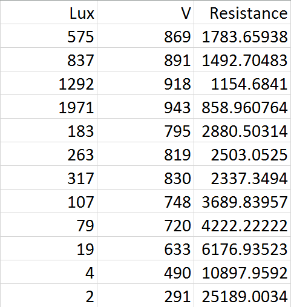
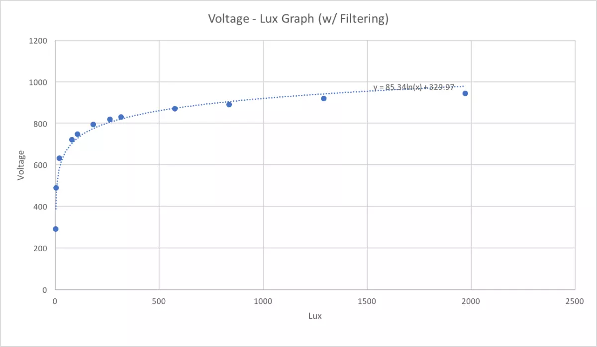
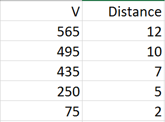
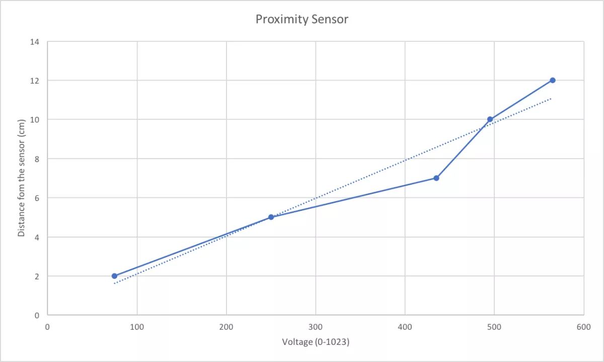

In the Extension of earlier work with arduino uno, In this task we are are building a circuit with photocell sensor and LED. Here we are trying to modulate the current passing through the LED using the photocell.
below is the circuit diagram.
In above circuit, we tried with different intensity of light on the photocell sensor and printed the voltage at LED.
below are the readings.
From above readings we plotted the relationship between the voltage and light intensity in lux.
as we can see from above plot, the relation between voltage and light intensity is logarithmic but the curve is not a perfect fit for the readings.
we now tried to filter the voltage readings by taking the running average of latest 10 voltages values. below is the code snippet.
#include <math.h>
int photocellPin = 0; // the cell and 10K pulldown are connected to a0
int photocellReading; // the analog reading from the sensor divider
int LEDpin = 11; // connect Red LED to pin 11 (PWM pin)
int LEDbrightness; //
const int numReadings = 10;
int readings[numReadings]; // the readings from the analog input
int readIndex = 0; // the index of the current reading
int total = 0; // the running total
int average = 0;
void setup(void) {
// We'll send debugging information via the Serial monitor
Serial.begin(9600);
for (int thisReading = 0; thisReading < numReadings; thisReading++) {
readings[thisReading] = 0;
}
}
void loop(void) {
photocellReading = analogRead(photocellPin);
// subtract the last reading:
total = total - readings[readIndex];
// read from the sensor:
readings[readIndex] = photocellReading;
// add the reading to the total:
total = total + readings[readIndex];
// advance to the next position in the array:
readIndex = readIndex + 1;
// if we're at the end of the array...
if (readIndex >= numReadings) {
// ...wrap around to the beginning:
readIndex = 0;
}
// calculate the average:
average = total / numReadings;
// send it to the computer as ASCII digits
Serial.print("Analog reading = ");
Serial.print(average); // the raw analog reading
int l = (int) pow(2.71, (average - 189)/102.75);
Serial.print(" ");
Serial.println(l);
LEDbrightness = map(l, 0, 1000, 0, 255);
analogWrite(LEDpin, LEDbrightness);
delay(100);
}
Now we again noted few readings of voltage and light intensity in lux, this time we calculated resistance as well. below are the readings.
we again plotted the graph between voltage and light intensity.
As we can see in above plot this time the curve coming to be a good fit. we also tried our hand to building a proximity sensor, where we took some readings of distance of the object from sensor and the voltage on LED. below are the readings.
when we plotted the relationship between the distance of the object from photocell and the voltage it came out to be approximately linear.
